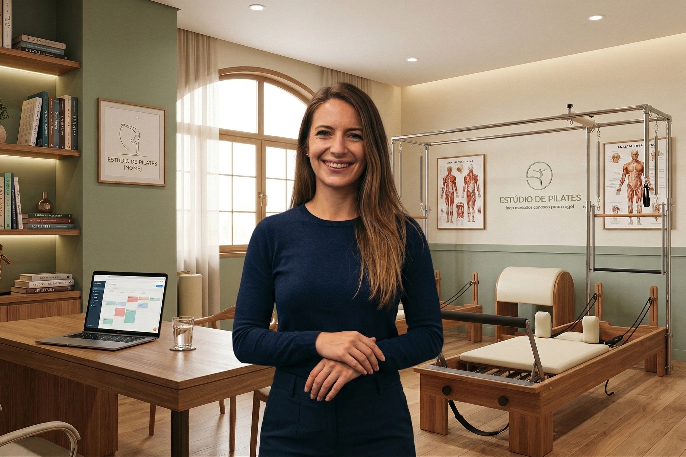

Especialista em Movimento
Recupere sua Liberdade de Movimento e Viva Sem Dor.
Dores constantes e lesões estão te impedindo de treinar ou realizar atividades simples do dia a dia?
Tentar treinar por conta própria ou com métodos genéricos só agrava o problema. Cada dia com dor é um dia a menos de qualidade de vida e liberdade.
Através da musculação terapêutica e do pilates, eu ajudo você a reabilitar seu corpo, fortalecer suas articulações e recuperar sua confiança.
Junte-se a dezenas de alunos reabilitados.

Especialidade em
Reabilitação